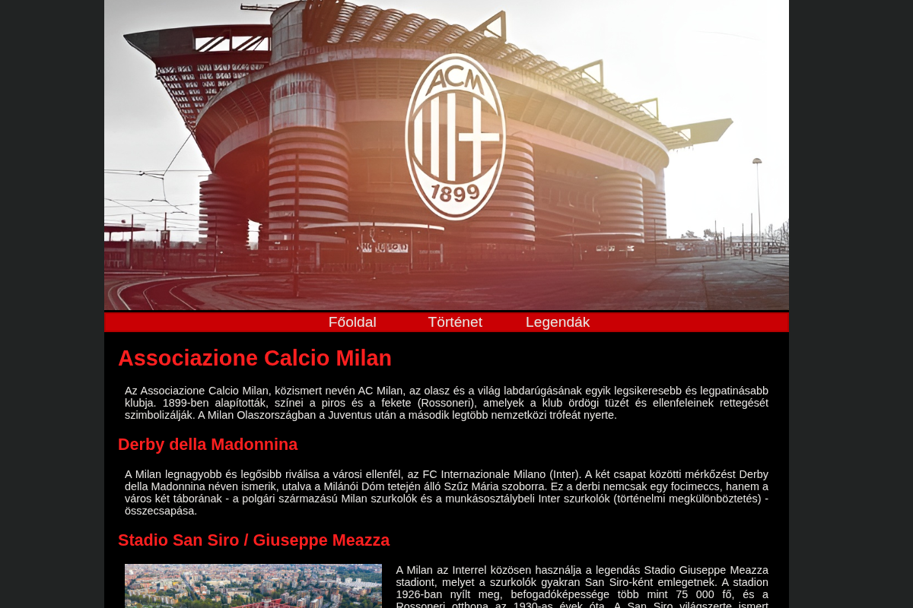
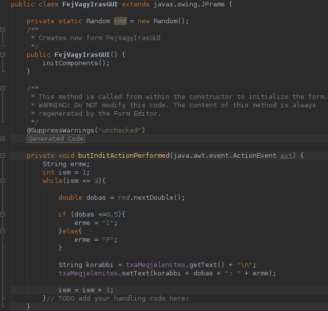
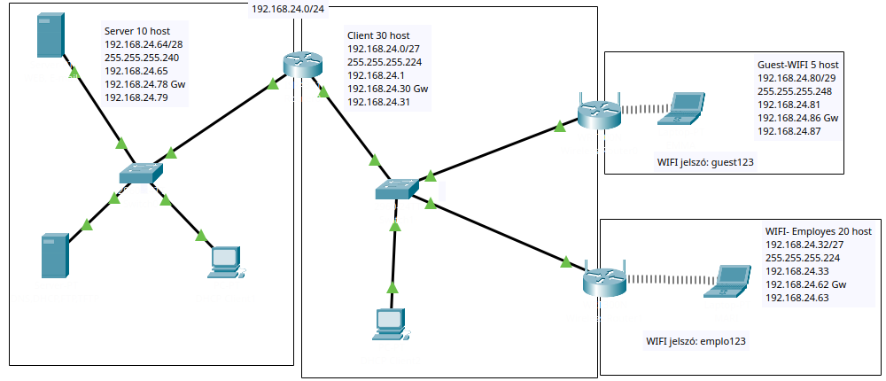
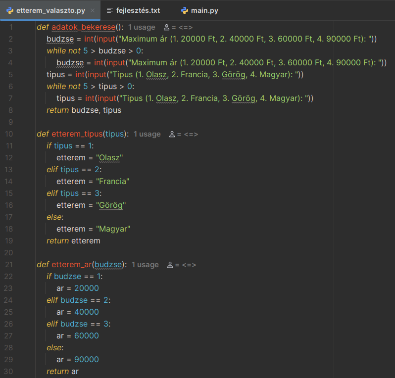

Kedvenc klubom
A kedvenc klubomról szóló weboldal, amit webprogramozás órára kellett készíteni.
LetöltésFej vagy írás
Egy egyszerű fej vagy írás játék, Java nyelvben írva, GUI-val. Meg lehet adni a dobások számát, és hogy hogyan írja ki az eredményt (több eredményt egymás alatt vagy vesszővel választva, vagy csak az utolsó eredményt).
LetöltésHálózatok dolgozat
Ez egy hálózatok órán készült dolgozatom, amiben már Email, HTTP, DHCP, DNS szervert is konfiguráltunk, a már megszokott WiFi Router konfigurálás mellet.
LetöltésÉtterem választó
Ez egy saját (nem kész) projekt lebutított verziója. A program egy étterem választó, ami különböző kritériumok megadása után ajánl éttermeket, ha van olyan. A felhasználónak itt még meg van kötve a keze a választási lehetőségek tekintetében (előre megadott büdzsé, éttermek közül választhat).
Letöltés